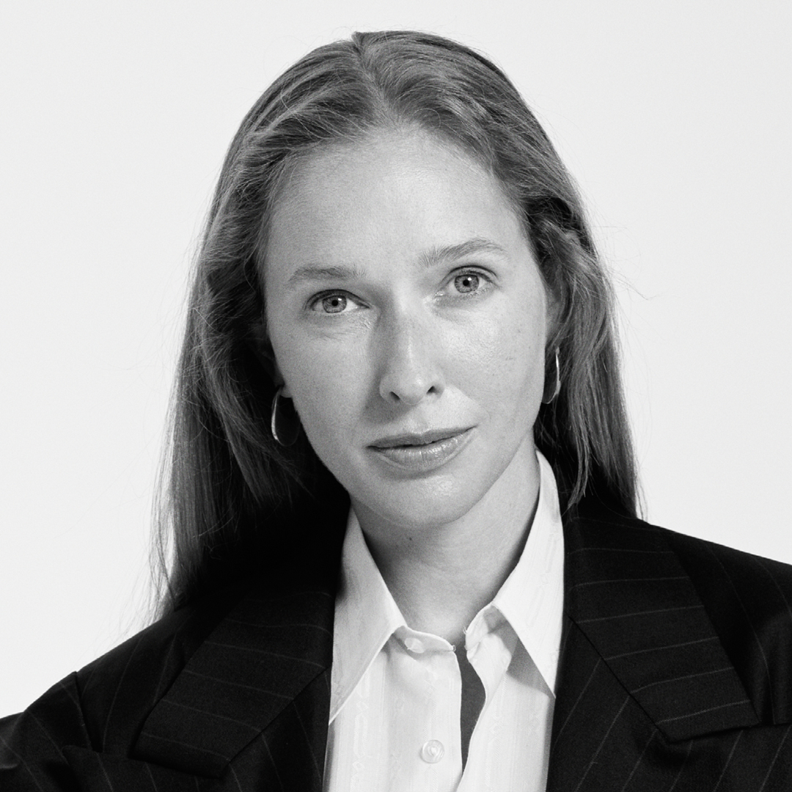

LOCATION: UNIT.City, Kyiv, str. Dorohozhytska, 3, campus B12. MAP
Vogue UA Conference FASHION & BUSINESS TODAY
About the event
The annual Vogue UA Conference returns in its traditional format for the first time since the beginning of the full-scale invasion. How to adapt to the crisis and to find inspiration, opportunities and resources to preserve and grow business?
Ukrainian Vogue is bringing together representatives of leading local and global companies in fashion, beauty, technology, designers, entrepreneurs, retailers and creatives to find answers to today's most urgent questions.
Speakers and guests of the conference will discuss the following issues:
- how to put a brand on the international map and to develop business in wartime - the experience of designers Ivan Frolov, Katya Silchenko and Julie Pelipas
- how to receive a grant for business development in Ukraine and how to take business to the international level, by Jen Sidari, founder and CEO of Angel for Fashion, and Yulia Svyridenko, First Deputy Prime Minister & Minister of Economy of Ukraine
- how to use artificial intelligence and technological innovation in the fashion industry
- how to build a sustainable business in conditions of total overproduction
SPEAKERS
Jen Sidary
founder and executive director of Angel For Fashion, an online platform supporting Ukrainian fashion
The former director of the Vivienne Westwood brand in the USA and the head of the Zappos fashion platform, together with Andre Leon Telly, launched the Zappos Couture online store. In 2020, she started working as a business consultant for the "Competitive Economy of Ukraine" program of the USAID organisation. Jen supports showcases of Ukrainian designers at Fashion Weeks in New York, Milan and Paris. Today, she manages the multi-brand platform angelforfashion.com, helping Ukrainian companies with international sales.
Juliе Pelipas
stylist, designer, and founder of the upcycling system BETTTER
The former fashion director of Ukrainian Vogue, Juliе Pelipas founded BETTTER upcycling system in 2020. After the beginning of the full-scale invasion, it transformed its website and social media channels into Bettter. GivenName.Community, a platform that aims to promote the country's creative talents on the international market. Last year in London, Pelipas was awarded Leaders of Change prize at The Fashion Awards. This year, she recieved the Karl Lagerfeld prize at LVMH Prize competition. She was recognized among the 100 people changing the fashion industry for the better by Vogue Business.
Yulia Svyrydenko
First Deputy Prime Minister & Minister of Economy of Ukraine
Yulia Svyrydenko, an economist, will be the First Deputy Prime Minister — Minister of Economy of Ukraine from 2021. Together with the team of the ministry, Yulia oversees the support and development of the Ukrainian economy during wartime; the mass mortgage program, humanitarian demining, including the development of the Mine Action Strategy and the launch of the humanitarian demining services market; development of the Ukraine Plan within the European Commission’s Ukraine Facility, the development of the Ukrainian light industry and much more.
Ivan Frolov
designer, creative director of FROLOV, Ukraine
In 2015, Ivan Frolov founded a namesake brand, betting on freedom of expression and provocation. His bold designs are favored by the world's biggest celebrities, from Beyonce and Dua Lipa to Kylie Minogue and Måneskin band members. The designer skillfully converts attention to the brand into tangible help for his country. He supports the Masha Foundation NGO, that is taking care of children affected by the war, and the Hospitaliers medical battalion. This year for for his active charity work Ivan Frolov was awarded the Vogue Talent Prize in the Resilience and Social Impact category.
Kateryna Silchenko
founder and designer of the COAT by Katya Silchenko
Designer Katya Silchenko launched the COAT by Katya Silchenko womenswear line in 2014. In 2021, she received the Best Designer of Women's Clothing award at the Best Fashion Awards in Kyiv. Kateryna was one of the first in Ukraine to systematically implement the principles of sustainable development and responsible production in fashion. Since the beginning of the full-scale war, she has initiated several charity projects. In particular, Silchenko released a drop of customized sneakers in patriotic colors and organised a large-scale Shoe Market, to raise money for prosthetics for the military. She is a laureate of this year's Vogue Talent Prize: Resilience and Social Impact award.
Natalia Kamenska and Maria Gavrilyuk
designers, founders of Gunia Project
Natalia Kamenska and Maria Gavrilyuk launched Gunia Project in 2019. They create tableware and utility items collections using authentic techniques and folk motifs, applying new artistic approach to traditional craft. Recently, the designers introduced their clothing collection. The brand is actively engaged in charity work. In 2023, under Natalia Kamenska's and Maria Gavrilyuk's leadership Gunia Project, was awarded Vogue Talent Prize: Resilience and Social Impact.

Kateryna Osadcha
Journalist & TV presenter
This year's Vogue UA Fashion & Business Today conference will be hosted by the renowned journalist and TV presenter Kateryna Osadcha. Since the beginning of the full-scale invasion, she has launched a nationwide search programme for civilians who disappeared during hostilities and in the occupied territories. The team of Find Your Loved Ones social project has initiated the introduction of new laws and legal tools for more effective search and return of people.
Tamara Cloe Leguia
Senior Trend Forecasting Consultant, WGSN
As a representative of the largest analytical platform, WGSN, which determines future trends, Tamara helps the world's biggest brands find practical business solutions. She is on the management team of the WGSN Sustainability Board, which works on sustainability initiatives. Tamara has an education in fashion and psychology from the London College of Fashion LCF.
Shana Chu
CEO/founder of Tailr platform
Working at the intersection of the fashion and technology industries, Shana Chu created the B2B software platform Tailr. This innovative solution allows to solve one of the most widespread problems in the industry - the discrepancy of dimensional grids. Trail was awarded the Best Irish start-up and an has generated impressive €700k in funding to promote streamlined clothing production.
Margarita Grubina
Business Development Representative at Respeecher
Ukrainian AI startup Respeecher creates synthetic voices for Hollywood and AAA companies. Respeecher technology is used by the world's largest streaming platforms Netflix, HBO, Disney+, Paramount+ and Showtime. In 2021, Margarita Grubina's team brought the "Emmy" to Ukraine, and in 2023 - the Webby Award, "Oscar" among Internet awards.
Venya Brykalin
Editor-in-Chief of Ukrainian Vogue
Venya Brykalin was appointed Editor-in-Chief of Ukrainian Vogue in May 2023. In this position, he continues to develop the publication's unique visual style and strengthen the brand's position on the international stage. This year, according to the Business of Fashion resource, Brykalin was included in the rating of the most influential people in the BoF 500. Within the Vogue UA Conference, he will hold a public talk with Ida Petersson, buying director of the British department store Browns.
Ida Petersson
Womenswear and Menswear Buying Director, Browns
Ida Petersson was born in Sweden. Studied and worked in the field of human rights protection and later studied fashion management at the London College of Fashion. She worked at Harvey Nichols and Net-a-Porter, and in 2017, she headed the purchasing department of Browns' department store in London. Thanks to Ida, Browns introduced many new fashion names to the world and became famous for its conscious curatorial approach. With extensive industry experience, Ida Petersson is a jury member for Copenhagen's Designers' Nest Award and the Fashion East XLNC young talent support program.
Anna Karnauch
co-founder of the Lanka.pro agency
An expert in the development of cultural and creative industries, Anna takes care of the direction of the creative economy at the British Council in Ukraine. Lanka.pro, co-founded by Karnauch, is a professional initiative designed to strengthen the cultural ecosystem of Ukraine to create a healthy and technological future.
VOGUE UA CONFERENCE: FASHION & BUSINESS TODAY
10:00 - 11:00
REGISTRATION
WELCOME COFFEE
11:00 - 11:15
OFFICIAL OPENING. SCREENING OF THE "VOGUE UKRAINE EDITION. TODAY" MINIFILM
Host Kateryna Osadcha
11:15 - 11:45
HOW EVERYONE CAN BECOME A POWERFUL VOICE OF UKRAINE
Julie Pelipas in conversation with Kateryna Osadcha
11:45 - 13:00
PERSONAL EXPERIENCE: HOW TO TAKE YOUR BRAND INTERNATIONAL
Ivan Frolov, Kateryna Silchenko, Maria Gavryliuk and Natalia Kamenska in conversation with Violetta Fedorova
13:00 - 13:30
HOW MAJOR RETAILERS SELECT THEIR BRANDS
Ida Petersson in conversation with Venya Brykalin
13:30 - 14:15
LUNCH BREAK
14:15 - 14:45
GAINING MOMENTUM: OPPORTUNITIES FOR DEVELOPING BUSINESS IN UKRAINE
Yulia Svyrydenko
14:45 - 15:15
ANGEL FOR FASHION: FOREIGN INVESTMENTS IN UKRAINIAN FASHION
Jen Sidary
15:15 - 15:45
VALUABLE LINK: CREATIVE INDUSTRIES, THEIR INFLUENCES AND OPPORTUNITIES